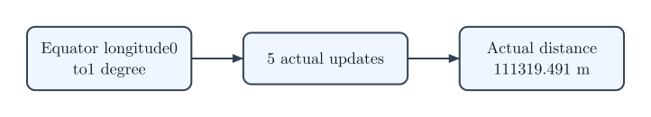
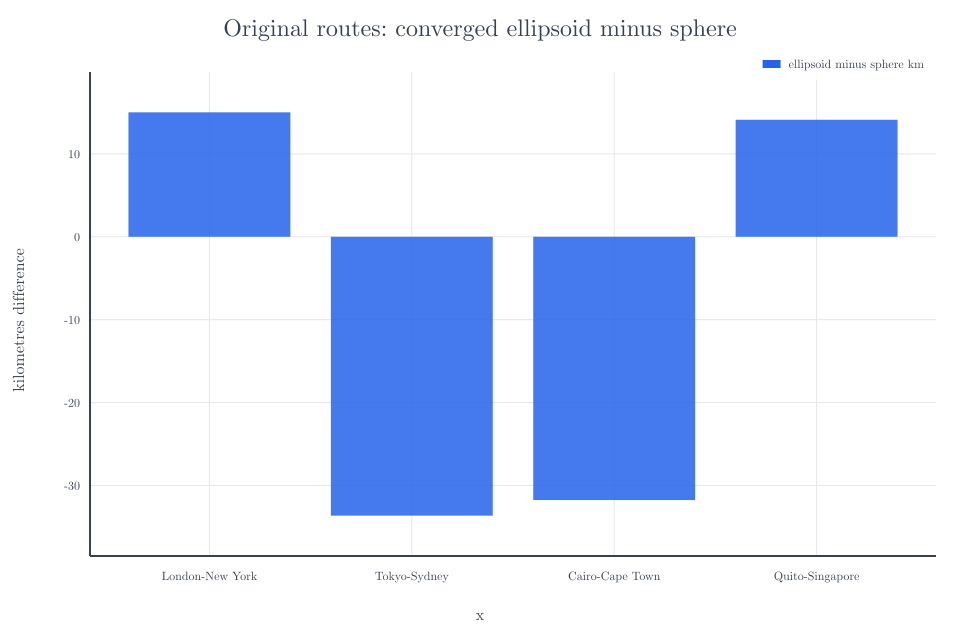
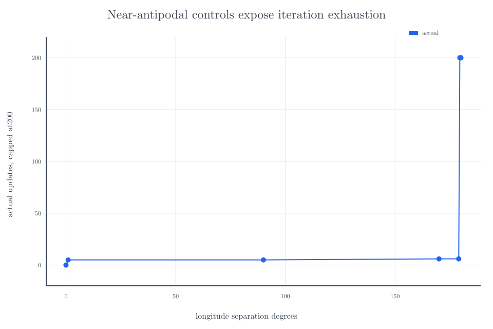
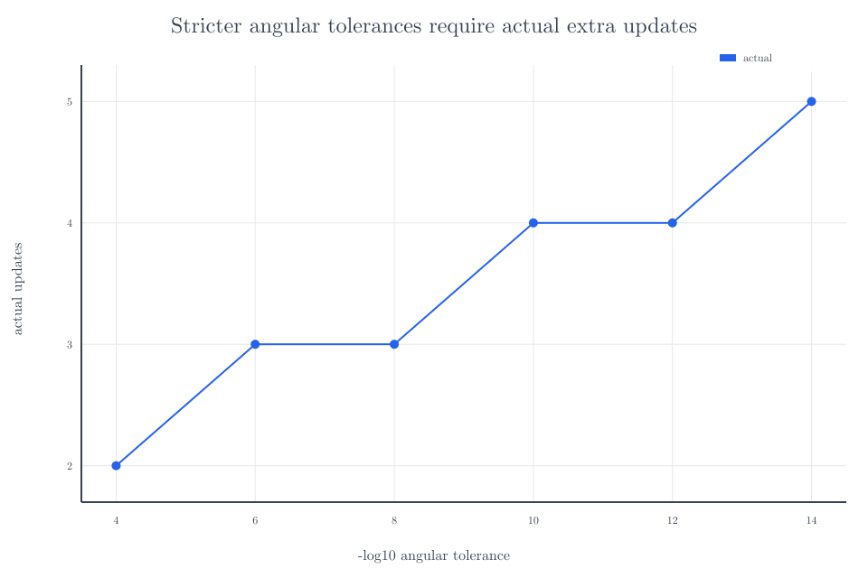

Vincenty inverse: actual longitude iteration and unresolved cases
Abstract
Distances on an ellipsoidal Earth differ from spherical great-circle distances. Vincenty solves an auxiliary-longitude fixed point, but its inverse iteration can fail near antipodal pairs.
The method
Reduced latitude is U=atan((1−f)tan(phi)), with WGS84 a=6378137m and f=1/298.257223563. Auxiliary longitude lambda is iterated from the reduced observed longitude difference using the ellipsoidal correction. The final arc sigma and flattening series give s=b*A*(sigma−deltaSigma). The actual successive lambda updates below expose the stopping condition delta lambda<tol. This is an angular fixed-point criterion rather than a certified metre-error bound; cap exhaustion yields an unresolved NaN distance.
Simple worked example
#include <dm/dm.hpp>
int main() {
namespace a = dm::algorithms;
namespace g = dm::graphics;
std::filesystem::create_directories("build");
auto r = a::vincenty_work(0, 0, 0, 1, 200, 1e-12, 10);
std::print("| actual lambda before | after | absolute update radians |\n|---:|---:|---:|\n");
for (auto q : r.steps)
std::print("|{}|{}|{}|\n", q.before, q.after, q.delta);
std::print("\nActual equatorial distance {}m; expected a*pi/180 {}m.\n",
r.result.distance_m, 6378137. * std::numbers::pi / 180);
g::Diagram concept_diagram(48, 1100);
concept_diagram.node("n0", {0, 0}, "Equator longitude0 to1 degree");
concept_diagram.node("n1", {5, 0},
std::format("{} actual updates", r.result.iterations));
concept_diagram.node("n2", {10, 0},
std::format("Actual distance {:.3f} m",
r.result.distance_m));
concept_diagram.edge("n0", "n1").edge("n1", "n2");
concept_diagram.save_svg("build/vincenty_tiny.svg");
}| actual lambda before | after | absolute update radians |
|---|---|---|
| 0.017453292519943295 | 0.01751181010523912 | 5.851758529582321e-05 |
| 0.01751181010523912 | 0.017512006303623175 | 1.9619838405662837e-07 |
| 0.017512006303623175 | 0.01751200696143921 | 6.578160342829431e-10 |
| 0.01751200696143921 | 0.01751200696364474 | 2.2055308968038645e-12 |
| 0.01751200696364474 | 0.017512006963652137 | 7.396860901565105e-15 |
Actual equatorial distance 111319.4907932264m; expected a*pi/180 111319.49079327358m.

The retained original experiment
#include <dm/dm.hpp>
int main() {
namespace a = dm::algorithms;
namespace g = dm::graphics;
std::filesystem::create_directories("build");
auto fb =
a::vincenty_inverse(-37.95103341666667, 144.42486788888889,
-37.65282113888889, 143.92649552777778);
std::print("Flinders Peak to Buninyong: actual {}m; published line54972.271m; converged {}.\n\n",
fb.distance_m, fb.converged);
std::vector<std::string> labels;
std::vector<double> diffs;
std::print("| route | actual metres | spherical metres | converged |\n|---|---:|---:|---|\n");
for (auto[name, a0, b0, a1, b1] : std::vector<std::tuple<std::string, double, double, double, double>>{{"London-New York", 51.5074, -.1278, 40.7128, -74.006}, {"Tokyo-Sydney", 35.6762, 139.6503, -33.8688, 151.2093}, {"Cairo-Cape Town", 30.0444, 31.2357, -33.9249, 18.4241}, {"Quito-Singapore", -.1807, -78.4678, 1.3521, 103.8198}}) {
auto r = a::vincenty_inverse(a0, b0, a1, b1);
double sphere = a::haversine_distance(a0, b0, a1, b1);
std::print("|{}|{}|{}|{}|\n", name, r.distance_m, sphere, r.converged);
if (r.converged) {
labels.push_back(name);
diffs.push_back((r.distance_m - sphere) / 1000);
}
}
auto p =
g::RPlot::barplot(diffs, labels, "ellipsoid minus sphere km",
{37, 99, 235});
p.title("Original routes: converged ellipsoid minus sphere").y_label(
"kilometres difference");
p.save_svg("build/vincenty_original.svg");
}Flinders Peak to Buninyong: actual 54972.27113865916m; published line54972.271m; converged true.
| route | actual metres | spherical metres | converged |
|---|---|---|---|
| London-New York | 5585233.578943206 | 5570222.179737957 | true |
| Tokyo-Sydney | 7792174.827117217 | 7825818.616516158 | true |
| Cairo-Cape Town | 7207485.271469279 | 7239246.944585568 | true |
| Quito-Singapore | 19743445.680792604 | 19729331.56290368 | true |

Checking the theory and controls
#include <dm/dm.hpp>
int main() {
namespace a = dm::algorithms;
namespace g = dm::graphics;
std::filesystem::create_directories("build");
std::vector<double> x, y;
std::print("| longitude separation | actual converged | updates | distance metres " "|\n|---:|---|---:|---:|\n");
for (double lon : {0., 1., 90., 170., 179., 179.5, 179.9, 180.}) {
auto r = a::vincenty_inverse(0, 0, 0, lon);
std::print("|{}|{}|{}|{}|\n", lon, r.converged, r.iterations,
r.distance_m);
x.push_back(lon);
y.push_back(r.iterations);
}
auto p = g::RPlot::create();
p.line(x, y, "actual", {37, 99, 235}, 2);
p.points(x, y, "", {37, 99, 235}, 5);
p.title("Near-antipodal controls expose iteration exhaustion").x_label(
"longitude separation degrees").y_label("actual updates, capped at200");
p.save_svg("build/vincenty_controls.svg");
}| longitude separation | actual converged | updates | distance metres |
|---|---|---|---|
| 0 | true | 0 | 0 |
| 1 | true | 5 | 111319.4907932264 |
| 90 | true | 5 | 10018754.171390377 |
| 170 | true | 6 | 18924313.43485648 |
| 179 | true | 6 | 19926188.85199594 |
| 179.5 | false | 200 | nan |
| 179.9 | false | 200 | nan |
| 180 | false | 200 | nan |

Sensitivity and selected work
#include <dm/dm.hpp>
int main() {
namespace a = dm::algorithms;
namespace g = dm::graphics;
std::filesystem::create_directories("build");
std::vector<double> x, y;
std::print("| tolerance radians | actual distance metres | actual updates |\n|---:|---:|---:|\n");
for (double tol : {1e-4, 1e-6, 1e-8, 1e-10, 1e-12, 1e-14}) {
auto r =
a::vincenty_inverse(51.5074, -.1278, 40.7128, -74.006, 200, tol);
std::print("|{}|{}|{}|\n", tol, r.distance_m, r.iterations);
x.push_back(-std::log10(tol));
y.push_back(r.iterations);
}
auto p = g::RPlot::create();
p.line(x, y, "actual", {37, 99, 235}, 2);
p.points(x, y, "", {37, 99, 235}, 5);
p.title("Stricter angular tolerances require actual extra updates").x_label(
"-log10 angular tolerance").y_label("actual updates");
p.save_svg("build/vincenty_work.svg");
}| tolerance radians | actual distance metres | actual updates |
|---|---|---|
| 1e-04 | 5585228.217607421 | 2 |
| 1e-06 | 5585233.574570023 | 3 |
| 1e-08 | 5585233.574570023 | 3 |
| 1e-10 | 5585233.578943206 | 4 |
| 1e-12 | 5585233.578943206 | 4 |
| 1e-14 | 5585233.578946775 | 5 |

Interpretation and limits
Coordinates are finite degrees in the stated latitude/longitude ranges; longitude differences are normalized modulo360. Coincident poles return zero independently of longitude. Nonconverged distances are NaN rather than an uncertified last-iterate distance. Haversine clamps rounding to its valid domain and is a sphere comparison, not independent ellipsoid ground truth. The WGS84 result agrees with the retained54972.271m reference at the displayed rounding. This single line is a numerical check, not a global convergence or accuracy guarantee.
The complete editable C++ programs save figures locally; results contain ordinary computed Markdown. Selected counters describe actual producer operations, excluding validation when stated.
References
Verified in the shared ten-document batch: 84 scoped native cases;20 directly
instrumented ASan/UBSan cases;45 executable public examples;127/127 definitions
across12 full scopes;10 hovers;2400 independent records/9344 checks;9 frozen
valid-input families plus the unchanged shared merge producer;11
checkout/installed standalone headers and linked ten-family consumer;40 executed
programs and40 inspected figures with both exports. Receipts:
build/mepml-conversion/batch-414-423/.